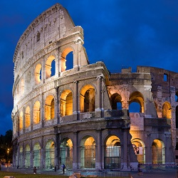
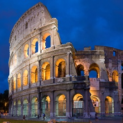

Italian Food

Italian food is known for its simplicity, with many recipes having only a handful of ingredients. Around the country there are lots of regional dishes many of which are based on the staple food of pizza and pasta. Pizza and pasta are well loved student dishes being both easy to make and cheap to prepare. Click on the links below to see some easy to prepare Italian food.
 
